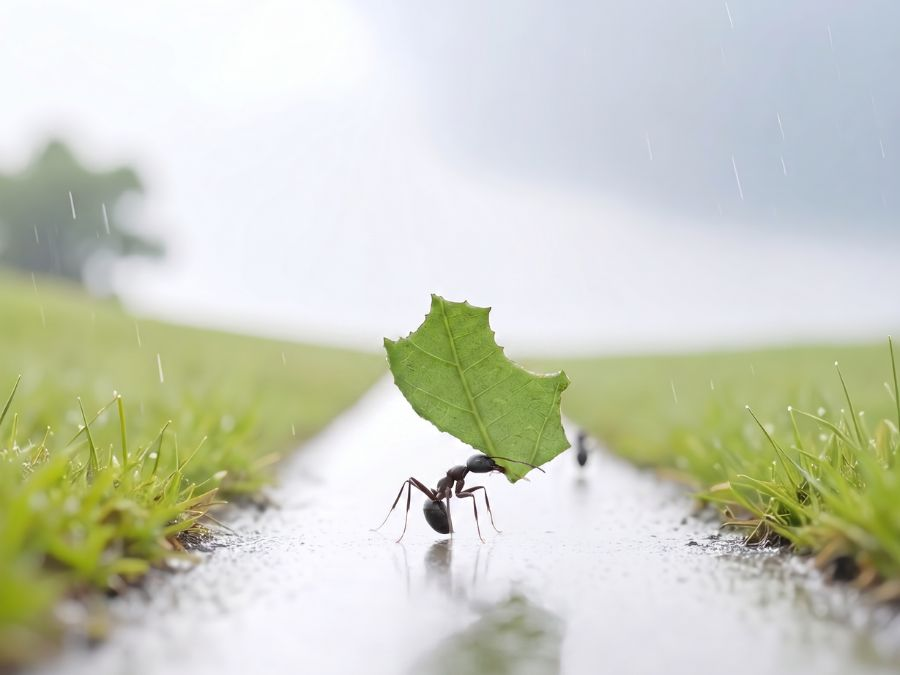
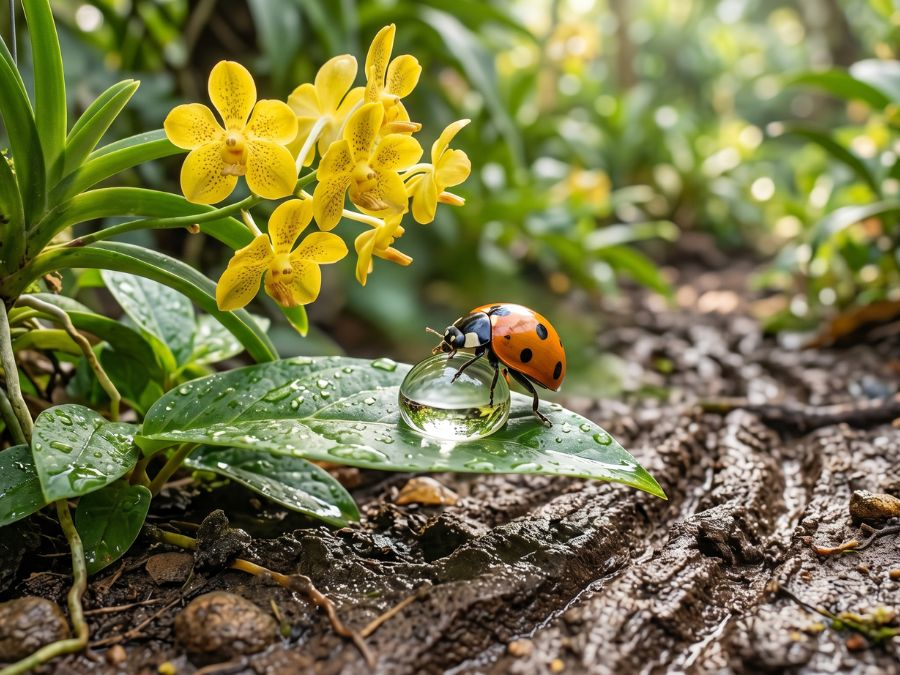

Alhures: poesias e textos
Onde o tempo não dita o compasso, A palavra encontra seu repouso. No silêncio que precede o passo, O verso nasce, tímido e pouso.
Onde o tempo não dita o compasso, A palavra encontra seu repouso. No silêncio que precede o passo, O verso nasce, tímido e pouso.

Linhas convergem para o nada, Onde a memória tenta se ancorar. A saudade é uma reta traçada Que o coração não sabe apagar.
Linhas convergem para o nada, Onde a memória tenta se ancorar. A saudade é uma reta traçada Que o coração não sabe apagar.

Um traço leve sobre a página, o peso exato do que não se diz. No branco espesso que me margina, encontro a forma que sempre quis.

Grito contido na garganta da folha, O poema é um abismo que olha de volta. Escolho a palavra que não me escolha, E amarro o sentido na linha solta.

Vejo o caminho exato das formigas na terra nua, carregando folhas caídas e frias, sob o peso do orvalho; O contorno do vento na manhã é uma foice que atravessa até a sombra que se alonga pela estrada. Há somente o silêncio que embala os segredos de um tempo que escorre na memória. Uma gota d'água atinge uma pedra; e depois outra; e mais outra. A chuva cai. Enquanto eu colho desculpas do meu jardim de ilusões, elas seguem, em silêncio, o caminho da eternidade.

A vanda amarela, lentamente, desabrocha — ela não tem pressa. Eu, ao contrário, quero colhê-la. Uma joaninha voa daqui para ali e pousa perto dela; percorre o contorno de uma folha, se refresca em um pingo d'água. Enquanto isso, o tempo escorre, e pelos sulcos carrega consigo a terra solta, até encontrar-se com o sol no horizonte. Já estou velho para colher vandas amarelas. Só me resta pedir à lua que ilumine meu caminho e guie meus passos de volta ao meu amor.
A casa está mais ou menos limpa. Ainda há pó nas prateleiras onde costumava guardar meus livros de matemática. Uma delas ficava rente ao chão. Num dia de chuva entrou água no meu quarto. A água chegou primeiro aos de baixo. Não os vi. Na verdade, há muito não os via. Eles, uma vez na primeira prateleira, agora na última — a mais perto do chão. Hoje jazem embolorados e amontoados numa caixa de papelão qualquer.